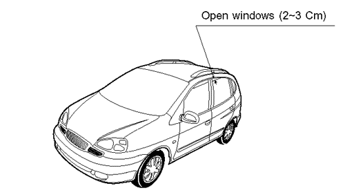
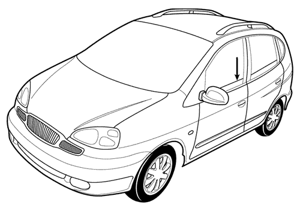
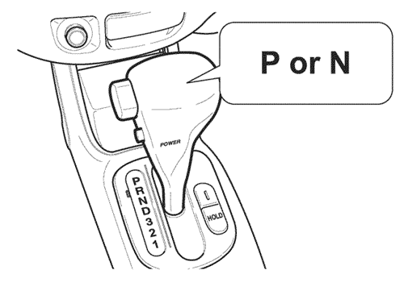
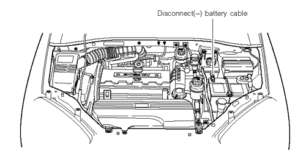
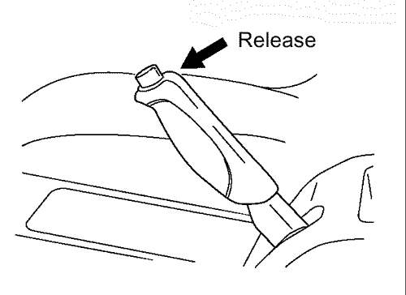
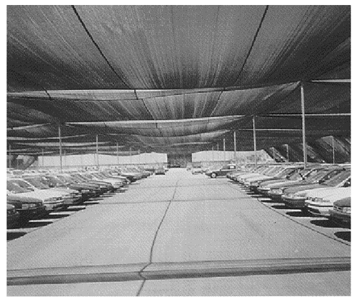

РАЗДЕЛ 7
ПРИЛОЖЕНИЕ
1. КОНТРОЛЬ ПРИ ПРИЕМКЕ
При приёмке нового автомобиля дилер должен сразу проверить его на повреждения, наличие всех необходимых элементов комплектации или наличие необходимых деталей и/или дополнительного оборудования. Проверка должна проводиться перед подтверждением получения автомобиля.
- 1) Проверка нового автомобиля
- Проверка каждого получаемого автомобиля имеет большое значение, поскольку новый автомобиль транспортируется несколькими средствами на длительном расстоянии от завода-изготовителя и при этом иногда возможны повреждения.
- Проверка должна включать следующее:
- а. Обход вокруг автомобиля и осмотр видимых частей шасси
- б. Проверка под капотом
- в. Проверка в области багажника или грузового отделения, включая все детали и/или дополнительное оборудование, хранящиеся или транспортируемые в них.
- г) Проверка салона, включая все панели, наполное покрытие и обшивку сидений.
- 2) Повреждения при транспортировке
- Компания GMDAT (GM Daewoo Auto & Technology Co., Ltd.) несёт ответственность исключительно за повреждения и/или дефекты на пути автомобиля от завода к порту погрузки. Вследствие этого до подписания документов о доставке представителем дилера, свидетельствующего о получении и приемлемом состоянии автомобиля или фиксирующего исключения, ответственность за повреждения, возникшие в результате транспортировки, несёт транспортирующая и/или страховая компания.
- Все повреждения, возникшие при транспортировке, включая украденные или отсутствующие детали, должны немедленно детально фиксироваться и сообщаться страховой и транспортирующей компании после получения и проверки автомобиля.
- 3) Отсутствующие или несоответствующие детали и дефекты производства
- При обнаружении отсутствующих или несоответствующих деталей и дополнительного оборудования во время контроля нового автомобиля необходимо составлять заявления на имя ответственного лица: страховой/ транспортирующей компании или производителя (GMDAT).
- В случае ответственности GMDAT за отсутствующие или несоответствующие детали и дефекты сборки, например, упущенные при производстве данного автомобиля, дилер имеет право на компенсацию по гарантии расходов, возникших в результате устранения несоответствий.
- Обнаруженное при контроле нового автомобиля отсутствие деталей, таких как аудиооборудование, запасное колесо с шиной, колпак колеса, домкрат, инструменты и т.п., которые могли быть удалены при транспортировке автомобиля, гарантией не покрывается. Заявления о подобных несоответствиях следует подавать в страховую или транспортирующую компанию.
2. ИНСТРУКЦИИ ПО ПРИМЕНЕНИЮ СРЕДСТВА HY-600 ДЛЯ УДАЛЕНИЯ ТРАНСПОРТИРОВОЧНОГО КОНСЕРВАЦИОННОГО ПОКРЫТИЯ МЕТОДОМ РУЧНОЙ МОЙКИ
Необходимые материалы: Одна бутылка (0,8 л) средства для удаления транспортировочного консервационного покрытия (для одного автомобиля)
Необходимое оборудование: Ведро, моющая рукавица, защитные очки, резиновая обувь и перчатки, шланг.
Чтобы предотвратить быстрое испарение раствора для удаления покрытия и уменьшить попадание воды на чистый автомобиль, процедура удаления должна проводиться в хорошо проветриваемом и затенённом месте. Данное место должно быть оборудовано системой слива и удалено от зелёных насаждений. Ниже представлена процедура удаления транспортировочного консервационного покрытия.
- 1) Для предотвращения образования царапин следует предварительно вымыть всю поверхность автомобиля водой, чтобы удалить частицы грязи и/или иных инородных веществ с покрытия.
- 2) Разбавить водой средство для удаления покрытия HY-600 в соотношении 1:2 (1 бутылка средства на один галлон воды) или 1:4 (1 бутылка средства на полтора галлона воды).
- 3) Нанести раствор средства с помощью поющей рукавицы, как при обычной мойке автомобиля. В один подход вымыть одну часть автомобиля (крышу, капот, люк и т.д.), обеспечивая влажность моющей рукавицы при контакте с удаляемым покрытием.
- 4) Оставить раствор HY-600 на поверхности автомобиля на 1-2 минуты для химического воздействия на покрытие.
Примечание: Запрещается оставлять раствор на поверхности до засыхания. В процессе снятия покрытия следует постоянно омывать поверхность автомобиля (примерно каждые 1-2 минуты), чтобы предотвратить засыхание раствора.
- 5) В завершение ополоснуть весь автомобиль чистой водопроводной водой, чтобы удалить растворённое покрытие и средство для его снятия.
- 6) Замшей или мягкой впитывающей салфеткой насухо вытереть автомобиль, чтобы предотвратить появление водянистых точек на лакокрасочном покрытии.
- 7) Убедиться, что на автомобиле не осталось транспортировочного покрытия. Удаление точек возможно с помощью небольшого количества средства HY-600, растворённого в водопроводной воде в соотношении от 1:1 до 1:4, и затем вытерев поверхность сухой чистой тканью.
Примечание:
- 1) Для удаления транспортировочного воска важным является выдерживание раствора строго в течение 1-2 минут.
- 2) При обнаружении воска после выполненных процедур нанести на обнаруженные места нерастворённые средство для удаления транспортировочного консервационного покрытия.
3. ХРАНЕНИЕ И ТЕХНИЧЕСКОЕ ОБСЛУЖИВАНИЕ НОВОГО АВТОМОБИЛЯ В УСЛОВИЯХ ПОВЫШЕННОЙ ТЕМПЕРАТУРЫ И ВЛАЖНОСТИ
ОПИСАНИЕ:
За условия защиты и обслуживание нового автомобиля перед передачей покупателю ответственность несёт исключительно дистрибутор. Для предотвращения появления ржавчины или повреждений в результате внешних условий необходимо регулярно проводить техническое обслуживание автомобиля. Ниже представлено минимальное техническое обслуживание, которое в обязательном порядке должно проводиться в процессе хранения нового автомобиля в местах с высокой температурой воздуха и высоким уровнем влажности.
- А. Место хранения
- Автомобиль по возможности следует хранить в чистом, сухом, закрытом и хорошо проветриваемом месте. При хранении вне помещения необходимо соблюдение следующих минимальных требований.
- 1) Место должно быть хорошо дренировано и иметь твёрдую (покрытую асфальтом и т.п.) поверхность.
- Рекомендации: Установка тента в указанном выше месте для защиты от воздействия ультрафиолетовых лучей солнца и загрязнения в результате налёта пыли или осадков (см. детальный рисунки 1&2 на стр. 7-8 & 7-9).
- 2) Следует избегать следующих мест:
- - низина, в которой возможно повреждение автомобилей паводковыми водами;
- - места вблизи заводов с выбросом отработавшего воздуха, способствующего образованию коррозии, или присутствием загрязняющих отходов;
- - места рядом с магазинами;
- - места под деревьями: в противном случае возможны повреждения соком деревьев и/или результатами жизнедеятельности птиц; - прибрежные места для предотвращения от воздействия солей.
- 3) По возможности автомобиль следует парковать на ровной поверхности.
- Б. Подготовка к хранению на складе
- При парковке автомобиля в месте для хранения необходимо соблюдение определённых мер предосторожности, как описано ниже.
- 1)Защита кузова и элементов внешней отделки.
- Кузов следует защищать от повреждений, например, обесцвечивания хрома, яркой отделки и лакокрасочного покрытия. Результатом подобных повреждений может быть отложение частиц грязи, жиров, масел и других активных веществ. Для защиты кузова необходимо выполнение нижеследующих действий.
- - Осторожно вымыть нижнюю часть кузова и шасси, чтобы удалить все активные вещества, такие как жиры, масла, смолы или грязи, которые могут откладываться при транспортировке.
- Осторожно проверить окрашенные поверхности и замазать все повреждённые металлические поверхности.
Примечание: За проведение таких мер по предотвращению коррозии ответственен сам дистрибутор.
- - Для консервации наружной части кузова и внешней отделки применяется воск, защищающий автомобиль от внешнего химического воздействия. При необходимости следует выполнить консервацию заново.
- 2) Внутреняя часть автомобиля
- Если автомобиль подвержен активному солнечному свету, следует закрыть сиденья, обшивку салона, приборную панель и т.д. тканью или закрыть стёкла затеняющими листами. (Для предотвращения выцветания покрытий, детонации, образования пузырей и отслоений)
- Систему вентиляции следует держать открытой (чтобы предотвратить повреждение внутренних элементов в результате образования высокой температуры); для этого необходимо немного открыть стёкла (на 2-3 см), особенно в условиях высокой температуры воздуха.
Внимание! При наличии в салоне системы ультразвуковой защиты необходимо соблюдать нижеследующие требования.
- - При включении системы ультразвуковой защиты с помощью передатчика необходимо предварительно закрыть все стёкла и люк в крыше (при его наличии). В противном случае при неисправности система ультразвуковой защиты может активизировать сигнализацию.
- - Для запирания автомобиля с открытыми окнами или люком (при его наличии) необходимо использовать только ключ. Без использования передатчика включение противоугонной защиты невозможно.




Раз в неделю необходимо открывать окна автомобиля.
Полностью открыть все четыре окна
- 3) Двигатель
- При кратковременном передвижении автомобиля (до 5 минут) на территории дилерского склада или производителя кузова внутри двигателя может образоваться конденсат. Для предотвращения рекомендуется еженедельно прогревать двигатель с частотой около 1200 мин-1, пока его температура не достигнет номинального значения. В результате накопившийся конденсат будет испаряться.
Примечание: Процедуру необходимо повторять не реже одного раза в неделю на протяжении всего времени пребывания автомобиля на складе; при работающем двигателе следует попеременно включить все передачи КПП.


- 4) АККУМУЛЯТОР
- Дилер несёт ответственность за защиту аккумуляторов их дозарядки и хранения на в местах с высокой температурой воздуха.
- Примерно каждые 15 дней следует проверять зарядку аккумулятора и при необходимости дозаряжать.
- Проверить контакты аккумулятора на наличие коррозии (белый или голубой порошок), при необходимости следует снять отрицательный кабель (-) и окунуть его в раствор соды и воды.
- Затем покрыть контакты литолом.
- Соединения кабелей аккумулятора и основные предохранители следует держать отсоединёнными.

- 5) Тормоз
- - Стояночный тормоз не включать.

- - Основной тормоз также должен быть полностью выключен.
- 6) Шины
- Накачать шины до рекомендуемого давления. Для предотвращения деформации при длительном хранении автомобиля следует накачивать шины чуть больше, чем рекомендовано, и изменять положение колёс, передвигая автомобиль. Периодически следует поворачивать колёса, чтобы менять место контакта шин с землёй. Проверить на наличие повреждений или трещин.
- 7) Кондиционер
- Следует периодически на несколько минут включать кондиционер на холостом ходу двигателя, при этом масло компрессора циркулирует по системе кондиционирования, благодаря чему предотвращается деформация компонентов компрессора.
- 8) Различные примечания
- - Для предотвращения образования ржавчины на рычагах, приводах, стержнях и кабелях под капотом их следует смазывать.
- - Для предотвращения образования ржавчины тщательно смазать шасси, особенно задний внутренний угол под капотом, болты крепления колёс, колпаки колёс, суппорт тормоза и подвеску.
- - Через каждые 21 день следует передвигать автомобиль на расстояние не менее 10 метров, чтобы таким образом смазать все важные узлы автомобиля, защищая их от коррозии.
- - Так как срок эффективного действия защитного воска составляет 6 месяцев, то при хранении автомобиля более 3 месяцев следует удалить воск транспортировочной защиты и нанести его снова. (парафиновый воск)
- - В суровое снежное время года необходимо перегнать автомобиль в безопасное место. Не следует хранить автомобиль под тентом.
Вследствие тяжёлого снега тент может обрушиться и повредить автомобиль.
ПРИМЕР ТЕНТА
